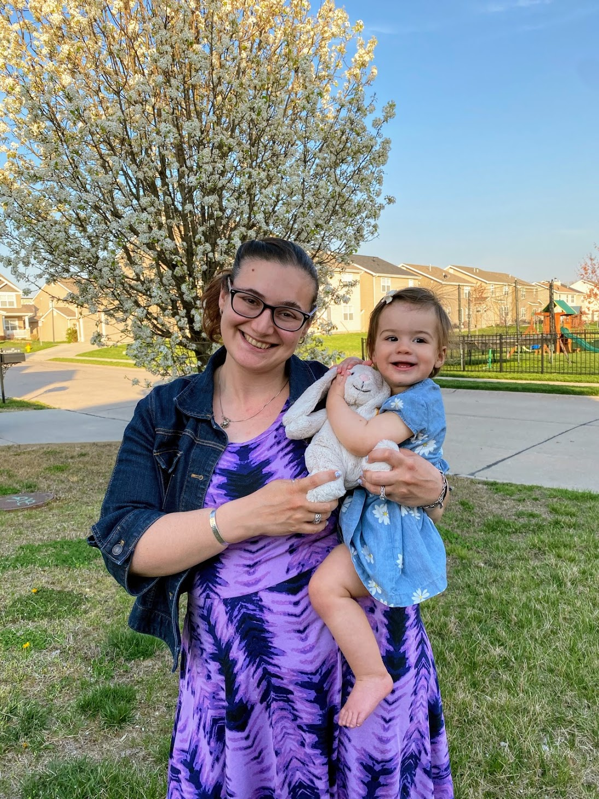

If you are a teacher thinking about diving into the programming world, check out this Linkedin article below:
Why Teachers Should Become Computer ProgrammersWhen you were little, did someone ever ask you what you wanted to be when you grew up? I know that as a kindergarten teacher I asked my students that question many times. I know that I was asked that question and eventually, at the ripe old age of 6 I had my answer...teacher or doplphin trainer. Or better yet, why not both?
My maternal grandparents were both teachers too. My grandmother always was teaching me songs. She taught early childhood (she called it Nursery School back then). I was always singing her songs. Then, when I was 13 years old, my grandfather suddenly passed away. That was the first loss that I was capable of comprehending. When we attended his funeral, I saw 4 generations of people who were taught by my grandfather. I thought that if I could touch just a fraction of the lives that he did then my life would be worth something.

I ended up teaching for 9.5 years and...for most of the time...I loved it. I taught Kindergarten for most of my teaching career and felt that it was a privilidge that I could teach people how to read. Then, cue in the pandemic and having a baby. Motherhood is no joke! Teaching virtually (plus a new grade), and having a baby at home who required a lot of attention was tricky. I was no longer my best self for me, my students or my family. I made the tough decision in March to step back from my teaching career in order to persue other interests.

One upside to the pandemic was realising the power of educational technology. I decided that I wanted to use my teaching degree in conjunction with web development. There is so much value to integrating technology in classrooms. As both an educator annd programmer I feel that I will have a strong knowledge base to help make classroom learning richer through the use of technology and adding to te value of what teachers teach in the classroom.